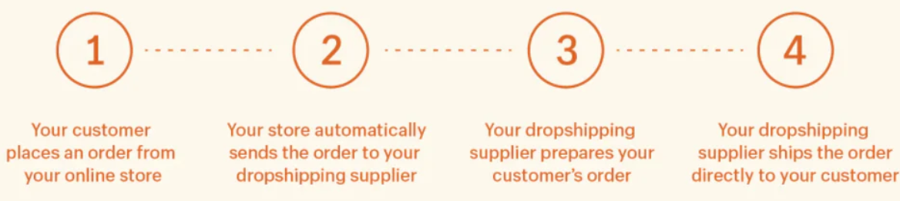

WHAT IS DROPSHIPPING?
Dropshipping is an order fulfillment method where a business doesn’t keep the products it sells in stock. Instead, the seller purchases inventory as needed from a third party—usually a wholesaler or manufacturer—to fulfill orders. The biggest difference between dropshipping and the standard retail model is that the selling merchant doesn’t stock or own inventory—they act as the middleman.
WHAT IS A DROPSHIPPER?
A dropshipper is a person or business that uses the dropshipping model of buying inventory and fulfillment logistics from a third party, instead of warehousing and shipping the products themselves. Because dropshipping relies on a third-party supplier to handle inventory warehousing and order fulfillment, a dropshipping operation may be managed by dozens of employees or a single business owner.
HOW DOES DROPSHIPPING WORK?
The dropshipping process is essentially a relationship between a customer-facing store and a supplier.
There are two common approaches to adopting a dropshipping business model. The first is to seek out one or more wholesale suppliers located in SOUTH AFRICA (or anywhere else in the world) on your own using a supplier database. Examples of popular online supplier databases include AliExpress, Wish, Amazon.